cc-sdd brings structured Spec-Driven Development to AI coding agents. It turns approved specs into long-running autonomous implementation with per-task independent review, TDD, and auto-debug. Works across 8 AI coding agents with the same 17-skill set.
"Turn approved specs into long-running autonomous implementation"

| Skill | Description |
|---|---|
/kiro-discovery | Route new work, write brief.md |
/kiro-spec-init | Initialize a new spec |
/kiro-spec-requirements | Write EARS-format requirements |
/kiro-spec-design | Architecture with Mermaid diagrams |
/kiro-spec-tasks | Generate task checklist |
/kiro-impl | Autonomous implementation |
/kiro-validate-gap | Gap analysis for existing codebase |
/kiro-validate-design | Design review |
/kiro-validate-impl | Implementation validation |
/kiro-spec-status | Check progress |
/kiro-spec-batch | Multi-spec initiatives |
/kiro-steering | Project-wide rules |
cd your-project
npx cc-sdd@latest# Start discovery
/kiro-discovery Photo albums with upload, tagging, and sharing
# Create spec
/kiro-spec-init photo-albums
# Write requirements
/kiro-spec-requirements photo-albums
# Design architecture
/kiro-spec-design photo-albums
# Generate tasks
/kiro-spec-tasks photo-albums
# Implement autonomously
/kiro-impl photo-albumsVery high relevance — Gold standard for spec-driven autonomous implementation.
cloned-repos/cc-sdd/
npm install and npx cc-sdd@latest --opencode-skills